Todos os Hooks do React sempre começa com set na frente, entao, esse hook definará o estado do componente
Hooks são uma nova adição ao React 16.8. Eles permitem que você use o state e outros recursos do React sem escrever uma classe. A página de introdução usou este exemplo para familiarizar com Hooks: 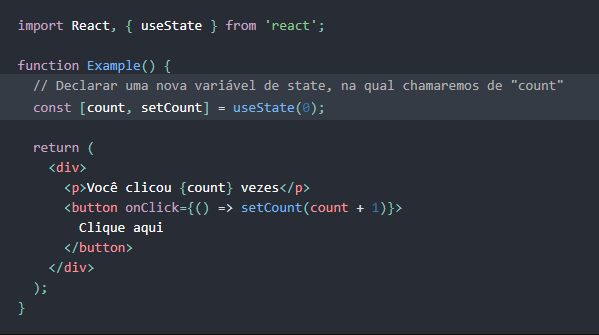
Vamos começar a aprender sobre Hooks comparando este código com um exemplo equivalente utilizando classe.
Se você já usou classes no React, este código deve parecer familiar: 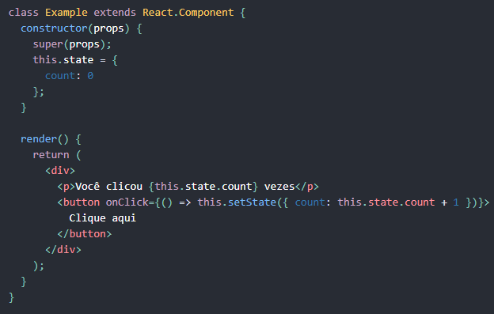 O state começa como { count: 0 }, e aumentamos o state.count chamando this.setState() quando o usuário clica no botão. Vamos utilizar trechos dessa classe ao longo da página.
Para lembrar, componentes de função, no React, se parecem com isto:
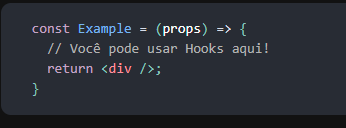
ou isto:
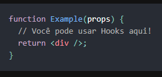
Você pode ter conhecido estes exemplos como “componentes sem estado”. Nós estamos introduzindo a habilidade de
utilizar o state do React neles, portanto preferimos o nome “componentes de função”.
Hooks não funcionam dentro de classes. Mas você pode usá-los em vez de escrever classes.
Nosso novo exemplo começa importando o useState Hook do React: 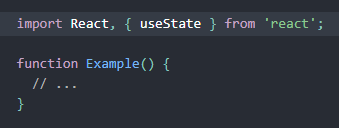
O que é um Hook? Um Hook é uma função especial que te permite utilizar recursos do React. Por exemplo, useState é um Hook que te permite adicionar o state do React a um componente de função. Vamos aprender outros Hooks mais tarde.
Quando eu deveria usar um Hook? Se você escreve um componente de função e percebe que precisa adicionar algum state para ele, anteriormente você tinha que convertê-lo para uma classe. Agora você pode usar um Hook dentro de um componente de função existente. Vamos fazer isso agora mesmo!
Em uma classe, inicializamos o state count para 0 definindo this.state para { count: 0 } no construtor: 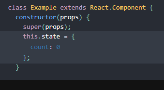
Em um componente de função, não temos this, portanto não podemos definir ou ler this.state. Em vez disso, chamamos o Hook useState dentro do nosso component: 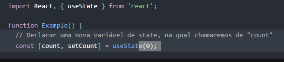
O que o useState faz? Ele declara um variável state. Nossa variável é chamada de count mas poderíamos chamar de qualquer coisa, como banana. Esta é uma maneira de “preservar” alguns valores entre as chamadas de funções — useState é uma nova maneira de usar as mesmas capacidades que o this.state tem em uma classe. Normalmente, variáveis “desaparecem” quando a função sai mas variáveis de state são preservadas pelo React.
O que passamos para o useState como argumento? O único argumento para o Hook useState() é o state inicial. Diferente de classes, o state não tem que ser um objeto. Podemos manter um número ou uma string se for tudo que precisamos. No nosso exemplo, apenas queremos um número para quantas vezes o usuário clicou, então passamos 0 como state inicial para nossa variável. (Se quiséssemos guardar dois valores diferentes no state, chamaríamos useState() duas vezes.)
O que useState retorna? Ele retorna um par de valores: o state atual e uma função que atualiza o state. É por isso que escrevemos const [count, setCount] = useState(). Isto é similar ao this.state.count e this.setState em uma classe, exceto o fato de pegá-los em par. Se você não está familiarizado com a sintaxe que usamos, vamos voltar nisso no final dessa página.
Agora que sabemos o que o Hook useState faz, nosso exemplo deve fazer mais sentido: 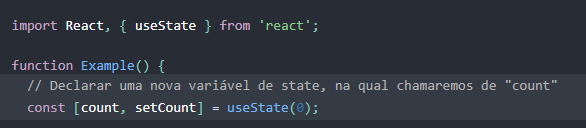 Nós declaramos uma variável state chamada count e definimos ela para 0. O React vai lembrar o valor atual entre cada re-renderização e fornecer o valor mais recente para nossa função. Se quisermos atualizar o count atual, podemos chamar setCount.
Você pode estar se perguntando: Por que é chamado useState ao invés de createState?
“Create” não seria muito preciso porque o state é criado apenas na primeira vez que nosso componente renderiza. Durante as próximas renderizações, useState nos da o state atual. Caso contrário, não seria “state” de qualquer maneira! Também tem outro motivo pelo qual nomes de Hook sempre começam com use. Vamos aprender o porque depois, nas Regras dos Hooks.
Quando queremos mostrar o count atual em classe, lemos this.state.count:
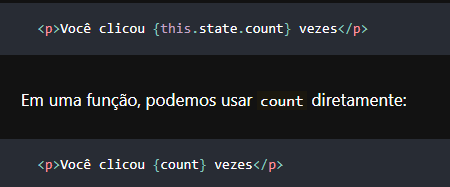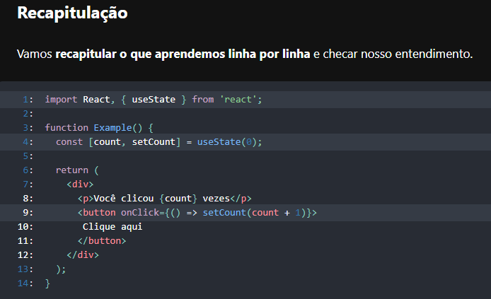
Você pode ter percebido os colchetes quando declaramos a variável state:
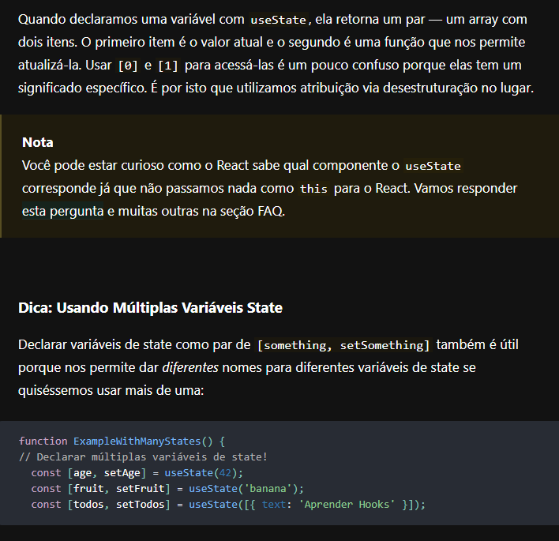 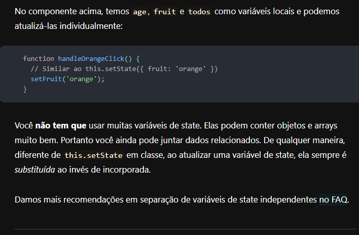 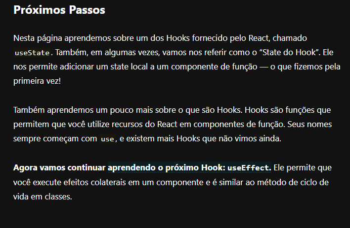Agora para finalizar um exemplo usando o useState para mudar uma animção e incrementar clicks 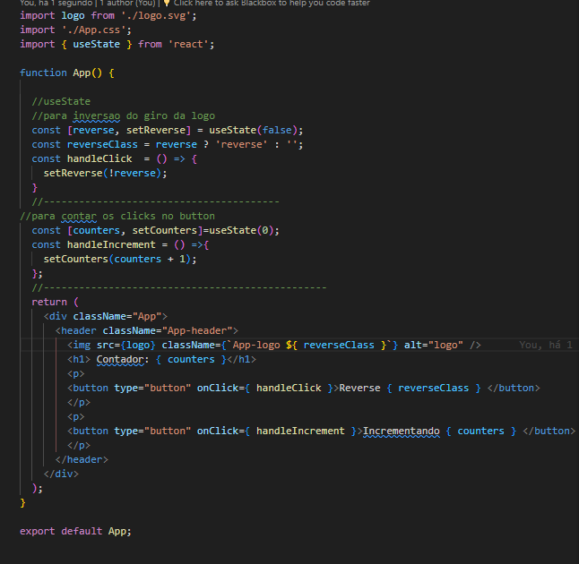
Tambem a outra forma de abordar o useState, usando função de callback, como as vezes é usado por muitos, e ela trabalhará com dependencias. exemplo: 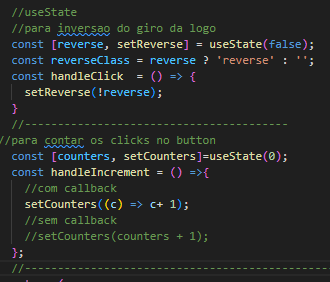 o callback garante q é o estado atual q esta sendo mudado, e tambem garante q esta sendo usado somente o parametro que esta atual, e será atualizado o contador